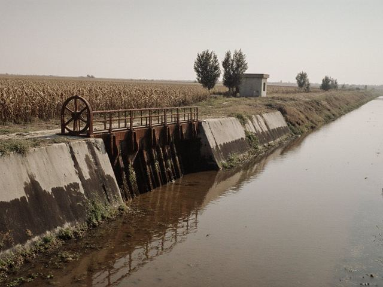

Menu
Useful links
iradgov.orgGovernore-Iradprocedures
GidrometweatherStatisticsprices
CustomsServiceTenderse-Irad
ATTELKOM TOP-1000187340 |
Home › Irrigation
Irrigation: water schedules by canal The seasonal water allocation plan for 2026 was approved by Order No. 64 of 25.03.2026 on the basis of the forecast of the Talas River Hydrological Monitoring Service (Talas: 104% of the mean for April-September). Water is delivered to the water users' associations at the outlets of the main canals; within the association it is shared by the association's own turn list. The provisional schedule for the 2027 season will be published by 15 April 2027 (Order No. 97 of 03.06.2020). Now: the irrigation season of 2026 is closed. Autumn moisture-charging watering runs until 18 November by the schedule below. Then the main canals close for the winter.
1. Canals and the 2026 seasonFind canal or district: Talas Basin Agricultural Directorate (Talas and Kara-Buura districts)
Chu Valley Irrigation Inspectorate (Chu District)
Lower Naryn Irrigation Section
Plan: maximum discharge at the head of the canal in June-July. Seasons are given as day.month. 2. Monthly discharge, plan and fact, 2026 (m³/s, monthly mean at the head)
Fact below 95% of the plan is shown in red. In August the Chu canals received less because of lower releases upstream; no rotations were needed in 2026. 3. Autumn moisture-charging watering 2026 (Order No. 151 of 20.10.2026)
Orchards and lucerne first, then ploughed land. Watering at night is allowed. Farms with arrears for water may be left out of the turn list by the association. 4. Winter closures and repairs 2026-2027
5. Rotations in dry yearsWhen the flow at the head works falls below 70% of the plan the Ministry introduces rotations: each section of a canal receives water for a number of days in turn (in August 2021 on the Talas canals: four days in eight). High-water crops (rice, then lucerne) are cut first. Large users act on their dry-year plans (Executive Directive 2022/14). Rotation schedules are announced on this site, on IradOne and through the water users' associations. 6. Watering days of the dacha cooperatives (Nurzhan)Karasu Canal, from 15 May to 15 September: Tuesday and Friday, 6:00-12:00 (Order No. 54 of 11.06.2018). Use of pumps on the canal outside these hours is not allowed. 7. Water fees35 som per 1,000 m³ (2026), paid to the water users' association; the association pays the Directorate or the Inspectorate 22 som per 1,000 m³ at the farm gate of the main canal. Fees are paid by the end of the season; associations may refuse water to a farm with arrears for the previous year. Water hotline in the season: +996-39-2-24-60-00 (8:00-20:00). |
Water situation
Potato imports Draft order: comment period closed 30.10.2026, 61 comments received. The decision will be announced by the Department of Public Information.Draft and register » Farm calendar: November
› autumn watering by WUA schedule › ploughing for spring crops › vaccination round to 30.11 › potatoes into the cellar at 2-4 °C › drip subsidy applications open Poll
Is the water schedule published early enough?
Reception of citizens Minister M. Nurmatov: first Wednesday of the month, 10:00-13:00, by registration, tel. +996-39-2-24-60-10. | |||||||||||||||||||||||||||||||||||||||||||||||||||||||||||||||||||||||||||||||||||||||||||||||||||||||||||||||||||||||||||||||||||||||||||||||||||||||||||||||||||||||||||||||||||||||||||||||||||||||||||||||||||||||||||||||||||||||||||||||||||||||||||||||||||||||||||||||||||||||||||||||||||||||
Government sites: iradgov.org · Ministries · Ministry of Health · Statistics · Gidromet · Talas City Hall · Nurzhan
© Ministry of Agriculture and Water Resources of the Irad Special Economic Zone, 2010-2026. When using materials a link to the site is obligatory.
Site made on the standard template of the Department of Public Information (www.id.gov/standard). Webmaster: info@agriculture.id.gov